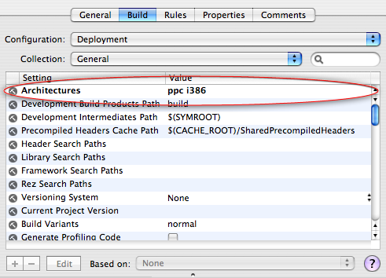
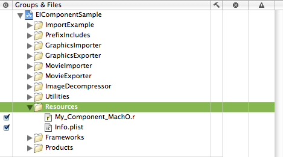
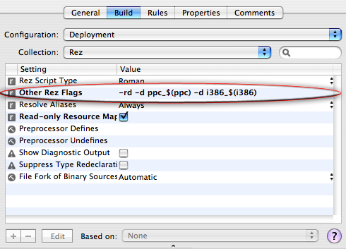
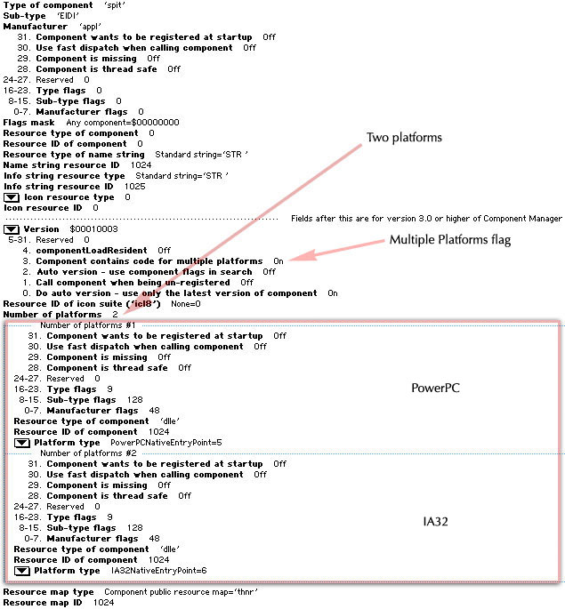

|
Binary FormatsMac OS X supports two application binary formats; Mach-O and CFM. Mach-O is the native Mac OS X object format and is supported by the gcc compiler and Xcode. CFM (Code Fragment Manager) is the legacy format used on Power Macintosh Computers running traditional Mac OS and is supported by compilers such as Metrowerks CodeWarrior. While Carbon components for Mac OS X may be built as Mach-O or CFM code, the use of CFM is no longer recommended. More importantly, Mach-O is the only binary format that has the capability to run natively on an Intel-based Macintosh. If you're building a new component, start with the latest version of Xcode (2.1 or greater) and build a universal binary component (this is a single component binary containing code that will run on PowerPC and Intel-based Macintoshes). If you're updating an older component, you'll first need to move to the latest version of Xcode then update your components code as needed. See the References section at the end of this document for links to documentation aimed at developers transitioning to Xcode. Note: While CodeWarrior does have the ability to build Mach-O binaries, it can't build universal binaries that will run natively on both PowerPC and Intel-based Macintosh computers. Mach-O ComponentsMach-O components for Mac OS X contain a dynamic library (dylib) in their data fork and are built using similar mechanisms to those for traditional Mac OS with the following differences:
Listing 1: Mach-O & Windows Entry Point.
// Code Entry Point for PowerPC-based & Intel-based Macs and Windows
resource 'dlle' (256) {
"MyComponentDispatch"
};
Listing 2: Mach-O PowerPC-based Mac 'thng' Resource.
// extended 'thng' template
#define thng_RezTemplateVersion 1
#include <Carbon/Carbon.r>
#include <QuickTime/QuickTime.r>
resource 'thng' (256) {
kSomeComponentType, // Type
'DEMO', // SubType
'DEMO', // Manufacturer
0, // use componentHasMultiplePlatforms
0,
0,
0,
'STR ', // Name Type
128, // Name ID
'STR ', // Info Type
129, // Info ID
0, // Icon Type
0, // Icon ID
kMyComponentVersion, // Version
componentHasMultiplePlatforms + // Registration Flags
myComponentRegistrationFlags,
0, // Resource ID of Icon Family
{
kMyComponentFlags,
'dlle', // Entry point found by symbol name 'dlle' resource
256, // ID of 'dlle' resource
platformPowerPCNativeEntryPoint, // Architecture
};
};
Listing 3: Mach-O Intel-based Mac 'thng' Resource.
// extended 'thng' template
#define thng_RezTemplateVersion 1
#include <Carbon/Carbon.r>
#include <QuickTime/QuickTime.r>
resource 'thng' (256) {
kSomeComponentType, // Type
'DEMO', // SubType
'DEMO', // Manufacturer
0, // use componentHasMultiplePlatforms
0,
0,
0,
'STR ', // Name Type
128, // Name ID
'STR ', // Info Type
129, // Info ID
0, // Icon Type
0, // Icon ID
kMyComponentVersion, // Version
componentHasMultiplePlatforms + // Registration Flags
myComponentRegistrationFlags,
0, // Resource ID of Icon Family
{
kMyComponentFlags,
'dlle', // Entry point found by symbol name 'dlle' resource
256, // ID of 'dlle' resource
platformIA32NativeEntryPoint, // Architecture
};
};
Universal Binary ComponentsArchitecture settingsOnce you've set the target architecture settings to build both Figure 1: Xcode architecture target settings.  ComponentPlatformInfoThe Component Manager however, recognizes which architectures a QuickTime component supports by looking at the components Because the "platform" information in the Building a Mach-O universal binary component today is no different, simply specify both Listing 4: Universal Binary Component 'thng' Resource.
// File : My_Component.r
// extended 'thng' template
#define thng_RezTemplateVersion 1
#if TARGET_REZ_CARBON_MACHO
#include <Carbon/Carbon.r>
#include <QuickTime/QuickTime.r>
#else
#include "ConditionalMacros.r"
#include "MacTypes.r"
#include "Components.r"
#include "QuickTimeComponents.r"
#include "ImageCompression.r"
#endif
resource 'thng' (256) {
kSomeComponentType, // Type
'DEMO', // SubType
'DEMO', // Manufacturer
0, // use componentHasMultiplePlatforms
0,
0,
0,
'STR ', // Name Type
128, // Name ID
'STR ', // Info Type
129, // Info ID
0, // Icon Type
0, // Icon ID
kMyComponentVersion, // Version
componentHasMultiplePlatforms + // Registration Flags
myComponentRegistrationFlags,
0, // Resource ID of Icon Family
{ // COMPONENT PLATFORM INFORMATION ----------------------
#if TARGET_OS_MAC
#if TARGET_REZ_CARBON_MACHO
#if !(TARGET_REZ_MAC_PPC || TARGET_REZ_MAC_X86)
#error "Platform architecture not defined!"
#endif
#if TARGET_REZ_MAC_PPC
kMyComponentFlags,
'dlle',
256,
platformPowerPCNativeEntryPoint, // PowerPC-based Macintosh
#endif
#if TARGET_REZ_MAC_X86
kMyComponentFlags,
'dlle',
256,
platformIA32NativeEntryPoint, // Intel-based Macintosh
#endif
#else
#error "TARGET_REZ_CARBON_MACHO should be defined."
#endif
#elif TARGET_OS_WIN32
#if TARGET_REZ_WIN32
kMyComponentFlags,
'dlle',
256,
platformWin32,
#else
#error "TARGET_REZ_WIN32 should be defined."
#endif
#else
#error "I have no idea what you're trying to do!"
#endif
};
};
Resource File DefinesOne easy way to setup your component resource files is to include a master resource ( .r ) file that defines the appropriate Listing 5 shows what a master resource file might look like. Note how this file sets the appropriate defines then includes the specific component resource file called Figure 2: Adding a single master resource file.  Listing 5: Master resource file.
// File : My_Component_MachO.r
//
//
// Mac OS X Mach-O Component: Set TARGET_REZ_CARBON_MACHO to 1
//
// In the target settings of your Xcode project, add one or both of the
// following defines to your OTHER_REZFLAGS depending on the type of component
// you want to build:
//
// PPC only: -d ppc_$(ppc)
// x86 only: -d i386_$(i386)
// Universal Binary: -d ppc_$(ppc) -d i386_$(i386)
//
// Windows Component: Set TARGET_REZ_CARBON_MACHO to 0
// ---------------------------------------------------
// Set to 1 == building Mac OS X
#define TARGET_REZ_CARBON_MACHO 1
#if TARGET_REZ_CARBON_MACHO
#if defined(ppc_YES)
// PPC architecture
#define TARGET_REZ_MAC_PPC 1
#else
#define TARGET_REZ_MAC_PPC 0
#endif
#if defined(i386_YES)
// x86 architecture
#define TARGET_REZ_MAC_X86 1
#else
#define TARGET_REZ_MAC_X86 0
#endif
#define TARGET_REZ_WIN32 0
#else
// Must be building on Windows
#define TARGET_REZ_WIN32 1
#endif
// include the individual component resource files
#include "My_Component.r"
Other Rez Flags
Figure 3: Setting up defines for Rez.  Resourcerer ToolResourcerer from Mathemaesthetics, Inc. is a great utility for QuickTime component developers. You can use it to view and edit resources and quickly check the correctness of your Figure 4: Universal Binary Component 'thng' viewed in Resourcerer.  Bundled ComponentsA Bundle is a directory in the file system that groups related resources together in one place. Xcode allows building components as both bundles and single file dylibs. QuickTime components however, should be built as Mac OS X bundles. Building a single file Mach-O component dylib is not recommended. Developers having older components configured as a single file binary should update their targets and build component bundles. Additionally, developers using older tools should make sure not to build resources into the resource fork of a Mach-O binary. To build a component bundle, select 'Carbon Bundle' from Xcode's 'New Project' dialog or 'Loadable Bundle' from the 'New Target' dialog if you're adding a target to an existing Xcode project. lipoThe Note: For more information about the Listing 6: Using lipo to get information about a universal binary.
toronto:~ ed$ lipo -detailed_info /ElectricImageUniversal.component/Contents/MacOS/ElectricImageUniversal
Fat header in: /ElectricImageUniversal.component/Contents/MacOS/ElectricImageUniversal
fat_magic 0xcafebabe
nfat_arch 2
architecture ppc
cputype CPU_TYPE_POWERPC
cpusubtype CPU_SUBTYPE_POWERPC_ALL
offset 4096
size 128176
align 2^12 (4096)
architecture i386
cputype CPU_TYPE_I386
cpusubtype CPU_SUBTYPE_I386_ALL
offset 135168
size 132084
align 2^12 (4096)
RosettaRosetta is a translation process that runs a PowerPC binary on an Intel-based Macintosh. This technology allows applications to run as non-native binaries. Rosetta however, does not support mixing native and translated code in a process. It does not provide the equivalent of the traditional Mac OS "Mixed Mode" technology. PowerPC-only components will NOT load into universal binary applications running natively on an Intel-based Macintosh. This means that components must be built as a universal binary or users will not be able to work with content that requires a non-native component in native applications. Conversely, applications running under Rosetta will always load the PowerPC version of a universal binary component, never the x86 version. This means that media playback performance will be limited in non-universal applications. IMPORTANT: QuickTime component developers are encouraged to build universal binary versions of their components. This will avoid situations where users may encounter difficulty performing expected tasks from within native applications. File Extension and LocationA component files should have a ".component" file name extension and be placed in the /Library/QuickTime directory. Sample CodeThe Electric Image Component sample demonstrates the techniques outlined in this document and shows how to build five QuickTime Components; a Graphics Importer, Graphics Exporter, Movie Importer, Movie Exporter, and Image Decompressor, which all work together to allow QuickTime to use Electric Image format image files. ReferencesDocument Revision History
Posted: 2005-07-21 | ||||||||||||
|